Project Overview
This project implements from scratch a path tracer and photon mapping renderer using C++ and CMake.
The renderer is able to render scenes with realistic lighting, different materials like glass, metal,
plastic, etc. and different shapes like spheres, cylinders, planes, etc.
Technical Details
Geometries
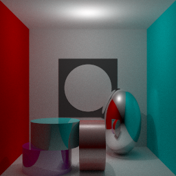
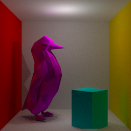
It supports the following geometries:
- Spheres, cylinders, planes, cones, ellipsoids, boxes.
- Triangle meshes for arbitrary 3D shapes
Textures
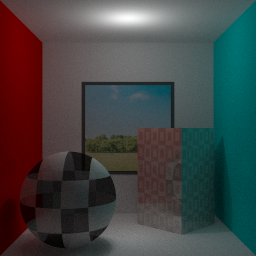
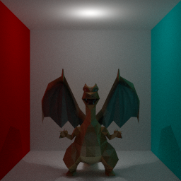
It supports textures for both 3D triangle meshes and the other geometries. The input texture must be in
PPM format.
Optimization
The renderer is optimized for performance using different techniques:
- Multithreading
- Bounding box for efficient ray intersection with 3D triangle meshes. Surround the whole 3D
figure using a box. When light rays don't intersect with the box, we can skip the intersection test
with all the triangles of the mesh.
- Kd-trees for efficient ray intersection with 3D triangle meshes. Divides the triangles of the
mesh into smaller groups to reduce the number of intersection tests.
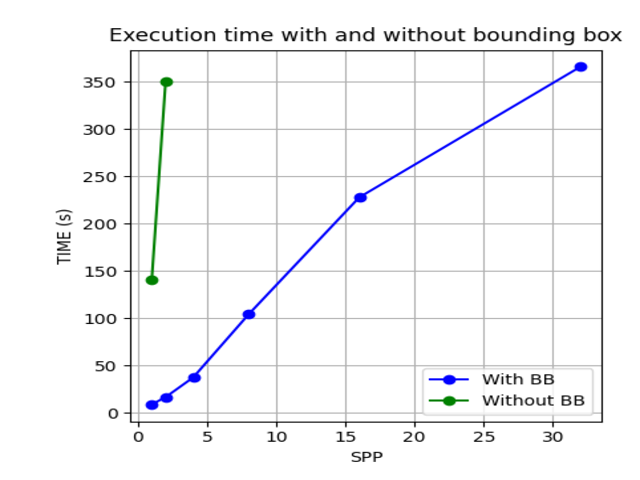
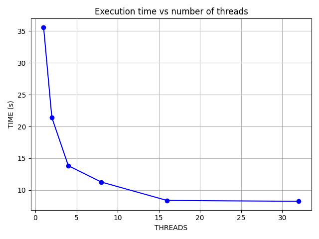
Results
The implementation of threads reduced the rendering time by a factor equal to the number of threads used
(up to a point).
The implementation of bounding boxes and Kd-trees allowed to render in a feasible time the scenes with
complex geometries. Without them, it would be impossible to render scenes with complex geometries in a
feasible time.
XML parser
The renderer is able to parse XML files to load the scene. The XML file contains the description of the
scene, including the geometries, the materials, the lights, the camera, etc.
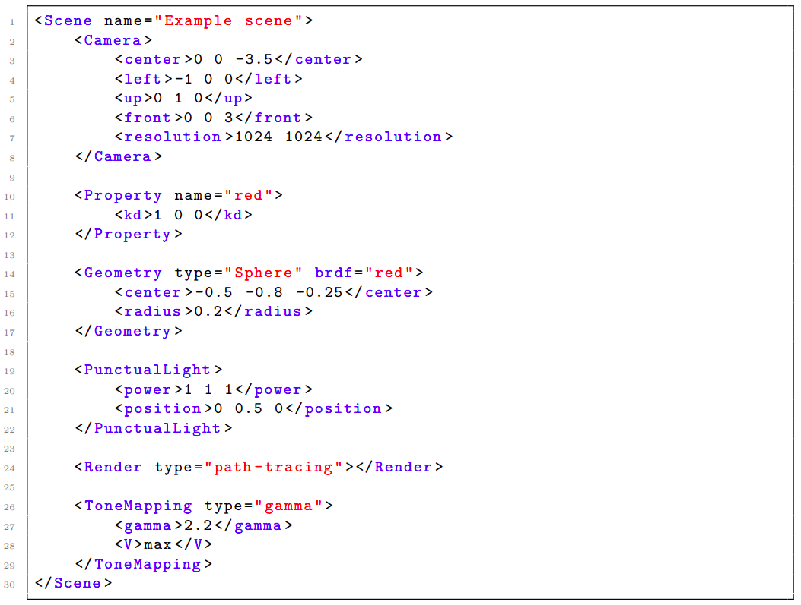
Project Overview
This is a research in Transient Rendering a type of rendering that, to make it simple, models how
the light flies throughout all the scene and how it interacts with the materials. In this framework,
instead of rendering a static scene (which is what the human eye sees and traditional rendering does),
we render a capture of the scene at a given time, giving as a result a video.
Example of a transient video.
This research project creates a new theoretical framework to model materials that present ligh
re-emission delays, i.e, when light hits these materials, the light re-emission is not instantaneous,
but takes some time. This is the case for some fluorescent materials or others, that, due to its
complex geometry, the light re-emission takes some time. We will call these materials transient
materials.
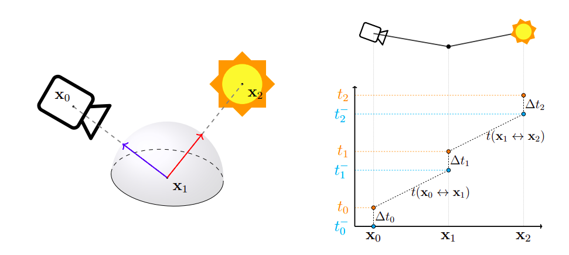
Illustration of light interacting with a transient material. Left: light path. Right: temporal
components where blue represents arrival and orange represents re-emission after a delay.
Modelling of Transient Materials
The materials appearance is given by its BRDF, i.e, a function that defines how the materials interact
with light. In the transient spectrum this function depends also on the time delay \(\Delta t\):
\[
f_r(x, \omega_i, \omega_o, \Delta t)
\]
To model this function, we suppose separability between space and temporal components:
\[
f_r(x, \omega_i, \omega_o, \Delta t) = f_s(x, \omega_i, \omega_o) \cdot f_t(\Delta t)
\]
and to model the space component, we use a probability density function (pdf) that models the
distribution of the delays \(\Delta t\). Three pdfs are used: Constant, Exponential and Epanechnikov:
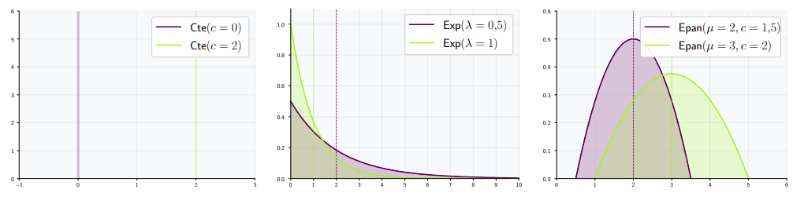
Constant, Exponential and Epanechnikov pdfs.
For example, a constant distribution with value \(c=1) means that the re-emission delay is one.
More complex models relaxing the separability assumptions were made to model more complex materials.
Results
Certain materials such as Chlorophyll, presents a complex re-emission profile. When light hits the
Chlorophyll, it re-emits most of the light instantaneously with a green color, but a small amount of
light is re-emitted
after a delay of one with a red color.
Using our models we now can model these materiales in the transient spectrum:
Left: Static image result Right: Transient video result.
Notice how the transient result is encoding information that is not present in the static one.
Project Overview
This project implements from scratch a path tracer and photon mapping renderer using C++ and CMake.
The renderer is able to render scenes with realistic lighting, different materials like glass, metal,
plastic, etc. and different shapes like spheres, cylinders, planes, etc.
Project Overview
This project implements from scratch a path tracer and photon mapping renderer using C++ and CMake.
The renderer is able to render scenes with realistic lighting, different materials like glass, metal,
plastic, etc. and different shapes like spheres, cylinders, planes, etc.
Project Overview
This project consisted in creating the backend for the famous game "Exploding Kittens" using
TypeScript, Node.js, PostgreSQL and Socket.io.
This included creating the game logic, the database, the API and the server. It has the following
features:
- Support web and mobile clients, with support for device changes in real-time
- Multiplayer support, with support for multiple games in real-time
- Login and registration system
- Friend list, chat, shop, invitation system for friends, statistics, customable profile.
- Reconnection, surrender, timeouts for inactive players.
- Authentication using JWT.
It is dockerized and can be run using docker-compose or locally.
Videos
We can see the game in action in the following videos (web client):
Basic Login and Registration
Gameplay
Shop and Customable Profile
Project Overview
This project focuses on developing robust control software for a custom-built robot based on the
BrickPi3 platform.
The system was designed to handle autonomous navigation, object tracking, and environment interaction
through computer vision.
Key capabilities include:
- Following complex straight or circular trajectories with high precision.
- Navigating autonomous through maze-like environments while avoiding dynamic obstacles.
- Real-time object tracking (specifically a red ball) and manipulation using a retractable
robotic arm.
- Advanced image recognition and comparison using OpenCV feature matching.
Technical Implementation
Path Planning & Navigation
For navigating complex maze environments, we implemented the A* Algorithm on an 8-directional
grid.
This approach significantly outperforms basic 4-directional BFS by finding optimal paths including
diagonal movements.
The heuristic function minimizes the total estimated cost by computing the straight-line cell distance
(Chebyshev distance) between the current node \(a\) and the goal \(b\):
\[h(a,b) = \max(|a_x - b_x|, |a_y - b_y|)\]
Obstacle Avoidance: The robot utilizes frontal and right-side ultrasonic sensors to map
the environment in real-time.
Upon detecting an obstacle, the system dynamically re-calculates the optimal path to ensure
collision-free navigation.
Computer Vision: Ball Tracking
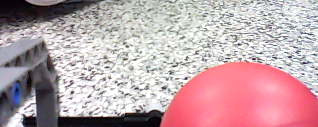
The visual tracking system processes camera input to identify and approach target objects. The pipeline
includes:
- Color Space Transformation: Converting frames to HSV space for more robust color
segmentation under varying lighting.
- Thresholding: Applying a specific color mask to isolate the red ball.
- Blob Detection: Using
cv2.SimpleBlobDetector to compute the centroid and radius
of the target.
- Visual Servoing: Using the detected ball's area as a depth proxy to control forward velocity,
stopping precisely when within grasping range.
Feature-Based Image Detection
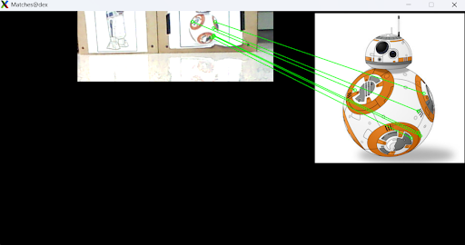
To recognize specific markers or locations, the robot employs a feature matching pipeline:
- Feature Extraction: Utilizing the ORB (Oriented FAST and Rotated BRIEF) detector for
efficient real-time performance.
- Matching: Performing Brute-Force matching with Hamming distance and cross-check
validation.
- Outlier Rejection: Applying RANSAC to filter false matches and ensure robust
recognition.
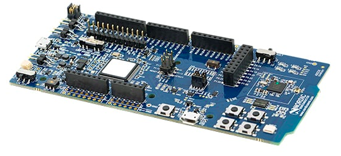
Project Overview
This project consisted in creating the Simon Game using C and Assembly for both nrf52840 microcontroller
(physical board). To be able to test it without the board and to abstract the hardware, we used the
LPC2105 microcontroller (simulator using Keil uVision). Therefore, the main project focuses on the
implementation on the nrf board, adapting the features to the LPC2105 microcontroller.
For this purpose, we used the 4 buttons of the nrf52840 microcontroller to control the game and the 4
LEDs to show the pattern and to communicate the game state (win, lose, start).
The game was played as follows:
- The game starts with a random pattern of 1 led.
- The player must repeat the pattern by pressing the buttons in the same order. If it is correct, the
pattern is repeated with one more led. If it is not correct, the game ends.
The technical details of the project are:
- Random pattern generation using the nrf52840 RNG peripheral.
- Button debounce to avoid false positives when pressing the buttons.
- Event-driven programming to handle the game logic using a FIFO queue.
- LED control using the nrf52840 GPIO peripheral.
- Using Real Time Counters (RTE) for timing the different events of the game.
- Using Interrupts to handle the button events.
- Using WatchDog Timer to reset the microcontroller if it gets stuck.
- Using Monitors to show game insights like current consumption mode, queue overflow, etc.
- Using nrf52840 persistent memory to store the high score.
- Putting the microcontroller in sleep mode to reduce power consumption when not in use.